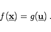
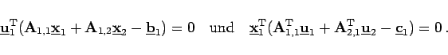

Inhalt Index DeskTop Bronstein

 Optimierung Lineare Optimierung Simplexverfahren Dualität in der linearen Optimierung
Optimierung Lineare Optimierung Simplexverfahren Dualität in der linearen Optimierung


|  | (18.21b) |
|  | (18.21c) |
An Hand der letzten beiden Beziehungen kann man aus einer nicht entarteten Optimallösung  des dualen Problems eine Lösung
des dualen Problems eine Lösung  des primalen Problems aus dem folgenden linearen Gleichungssystem ermitteln:
des primalen Problems aus dem folgenden linearen Gleichungssystem ermitteln: